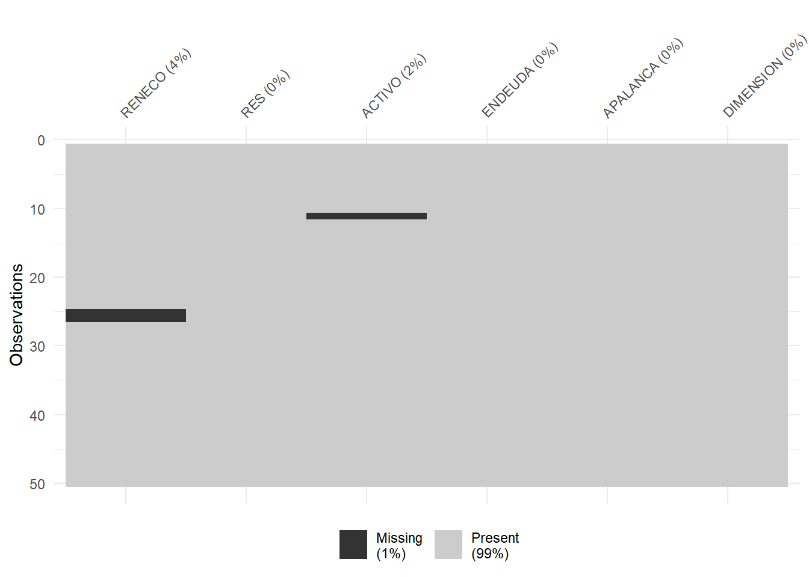
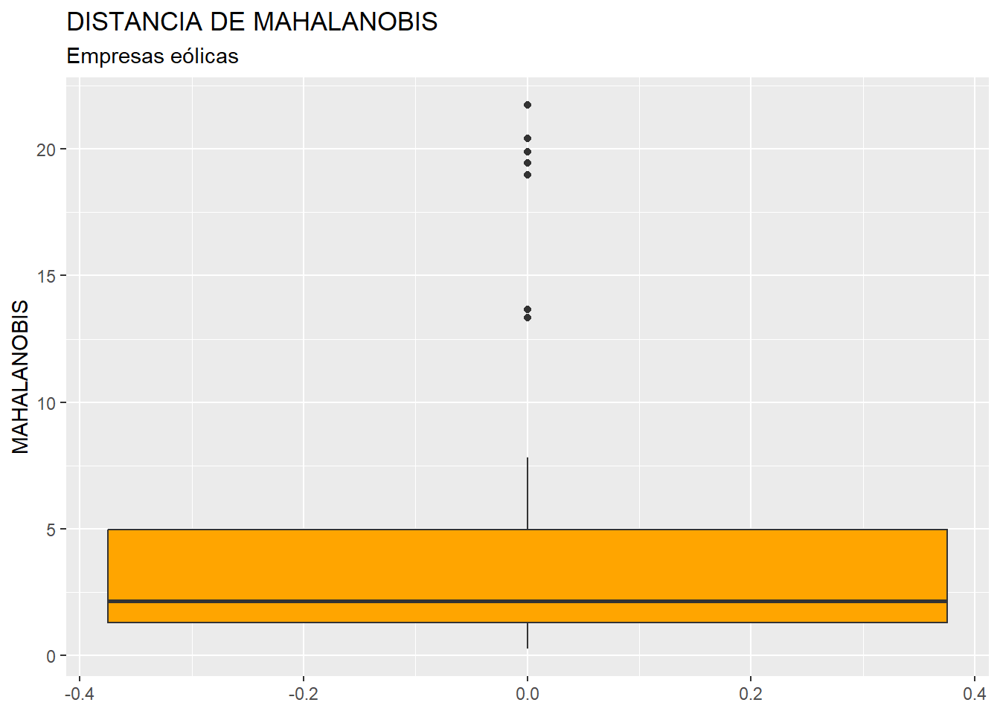

Capítulo 9 Análisis de Regresión Lineal Múltiple.
9.1 Introducción.
El análisis de regresión (lineal) múltiple es una de las técnicas de análisis de dependencias más profusamente utilizadas. En el modelo de regresión múltiple la variable dependiente tiene escala métrica. Las variables explicativas pueden ser métricas o ser atributos.
Según los datos de los que se alimenta el modelo, se aplicarán diferentes métodos de estimación, especificaciones y pruebas:
Series temporales.
Datos de corte transversal.
Paneles de datos.
En este capítulo nos centraremos en los modelos estimados con base en datos de corte transversal (es decir, las variables tienen datos referentes a distintos casos o individuos: personas, empresas, países, etc.)
La construcción de un modelo de regresión cuenta con una serie de etapas, que son:
Especificación del modelo: establecer las variables que entrarán a formar parte del modelo (dependiente, explicativas).
Estimación: calcular el valor de los parámetros o coeficientes estructurales del modelo.
Contraste y validación: verificar si el modelo estimado cumple con las hipótesis que garantizan unas buenas propiedades y si es adecuado para representar la realidad.
Utilización del modelo: a efectos de previsión, análisis estructural o simulación de escenarios.
Vamos a partir del modelo básico de regresión (MBR). Es cierto que, para superar ciertas carencias de este, se ha procedido a desarrollar especificaciones y métodos de estimación más elaborados; pero no es menos cierto que no es conveniente “quemar” etapas sin conocer las características del modelo fundamental, como cimiento donde se posan modelados más complejos.
En el MBR vamos a suponer que existen:
Una variable dependiente y.
k variables explicativas \(x_j\).
Variable o perturbación aleatoria u, que recoge el efecto conjunto de todas aquellas variables que afectan al comportamiento de y pero que no están explicitadas en la especificación como variables x.
El tamaño de la muestra es n.
El modelo que se plantea es:
\[ y_i=\beta_1x_{i1}+\beta_2x_{i2}+\cdots+\beta_kx_{ik}+u_i \]
con \(i=1,2,...,n\) .
O, en notación matricial:
\[ y=X\beta+u \]
Donde y es un vector (nx1), X una matriz (nxk), \(\beta\) un vector (kx1), y u un vestor (nx1).
En el MBR, la perturbación aleatoria u debe cumplir con una serie de hipótesis básicas: normalidad en su comportamiento, esperanza nula, homoscedasticidad o varianza constante, y ausencia de autocorrelación (covarianza nula entre diferentes elementos del vector de la perturbación). Estas hipótesis, junto a las de permanencia estructural (valores de los elementos de \(\beta\) constantes a lo largo de la muestra), no endogeneidad o regresores no-estocásticos (covarianza nula entre la matriz X y el vector u), y rango pleno (las columnas de la matriz X o variables explicativas no han de ser combinaciones lineales unas de otras); permiten que el MBR pueda ser estimado por el método de mínimos cuadrados ordinarios (MCO), obteniendo estimadores con las mejores propiedades: insesgadez, eficiencia, consistencia.
En la medida en que alguna o algunas de las hipótesis básicas no se cumplan, la calidad de los estimadores MCO perderan calidad, en el sentido de no gozar de las propiedades deseables, desde un punto de vista inferencial. En tal caso, podrán aplicarse otros métodos de estimación, diversos métodos econométricos, o asumir que los estimadores carecen de algunas de las propiedades deseables.
El modelo estimado será:
\[ \hat{y}_i=\hat{\beta}_1x_{i1}+\hat{\beta}_2x_{i2}+\cdots+\hat{\beta}_kx_{ik} \]
Y el error o residuo será, para cada observación, \(\hat{u}_i=y_i-\hat{y}_i\). El vector de residuos se considera una estimación del vector de perturbaciones aleatorias. Es por ello que el vector de residuos se utiliza para verificar el cumplimiento de las hipótesis del modelo básico referentes al comportamiento de la perturbación (normalidad, homoscedasticidad, ausencia de autocorrelación…)
Tras estas breves notas formales del MBR, pasaremos a construir un modelo que intentará explicar el comportamiento de la rentabilidad económica de un grupo de empresas en función de una serie de variables aleatorias.
9.2 Especificación del MBR. Datos de corte transversal.
Vamos a explicar, mediante un modelo de regresión múltiple, el comportamiento de la rentabilidad económica (RENECO) de las empresas de producción eléctrica mediante tecnología eólica en función del resultado del ejercicio (RES), el activo (ACTIVO), del grado de endeudamiento (ENDEUDA), del grado de apalancamiento (APALANCA), y del tamaño del grupo corporativo (matriz) al que pertenece (DIMENSION). Para ello se ha seleccionado una muestra constituida por 50 empresas.
Supondremos que trabajamos en un proyecto de RStudio de nombre, por ejemplo, “regresion”. Los datos de las empresas se encuentran en la hoja “Datos” del archivo de Microsoft® Excel® “eolica_50.xlsx”. El script con el código que vamos a ir ejecutando se llama “regresion_eolica.R”.
En primer lugar, como de costumbre, hemos de preparar los datos: importarlos en R y gestionar missing values y outliers.
Así, una vez abierto el script en el editor de RStudio , comprobaremos que la primera parte del código está dedicada a la limpieza de la memoria (Environment) y a la importación de los datos. Para ello, activaremos el paquete {readxl} y utilizaremos la función read_excel(), indicando en los argumentos el archivo a explorar, y la hoja en la cual se encuentran los datos (hoja “Datos”). También hemos de prestar atención a la cuestión de si existen en la hoja de Excel anotaciones en las celdas donde no haya dato, para completar adecuadamente el argumento na= . Los datos se almacenarán en el data frame “datos”. En este data frame, la primera columna no es una verdadera variable, sino que se compone de los nombres de los casos o empresas. Con una línea de código adicional transformaremos esa primera columna en el nombre de las filas, de modo que tal columna abandona su rol de variable. En definitiva, el código para importar los datos es:
## Regresion multiple empresas eolicas. Disculpen la falta de tildes.
rm(list = ls())
# DATOS
# Importando
library(readxl)
eolicos <- read_excel("eolica_50.xlsx", sheet = "Datos",
na = c("n.d.", "s.d."))
eolicos <- data.frame(eolicos, row.names = 1)
summary (eolicos)## RES ACTIVO FPIOS
## Min. :-5268.6 Min. : 25355 Min. : -10985
## 1st Qu.: 919.6 1st Qu.: 35512 1st Qu.: 1897
## Median : 2321.2 Median : 50301 Median : 17256
## Mean : 4986.7 Mean : 189142 Mean : 83164
## 3rd Qu.: 4380.4 3rd Qu.: 101035 3rd Qu.: 44871
## Max. :42737.0 Max. :2002458 Max. :1740487
## NA's :1
##
## RENECO RENFIN LIQUIDEZ
## Min. :-2.708 Min. :-263.639 Min. : 0.0140
## 1st Qu.: 1.817 1st Qu.: 1.251 1st Qu.: 0.6462
## Median : 3.957 Median : 14.322 Median : 1.1550
## Mean : 5.758 Mean : 32.071 Mean : 4.2370
## 3rd Qu.: 8.038 3rd Qu.: 36.193 3rd Qu.: 1.9185
## Max. :35.262 Max. : 588.190 Max. :128.4330
## NA's :2
##
## ENDEUDA MARGEN SOLVENCIA
## Min. : 0.917 Min. :-2248.16 Min. :-24.465
## 1st Qu.: 37.272 1st Qu.: 14.74 1st Qu.: 4.327
## Median : 74.683 Median : 23.86 Median : 25.317
## Mean : 66.646 Mean : -17.77 Mean : 33.353
## 3rd Qu.: 95.672 3rd Qu.: 45.88 3rd Qu.: 62.727
## Max. :124.465 Max. : 400.90 Max. : 99.082
##
## APALANCA MATRIZ DIMENSION
## Min. :-6905.772 Length:50 Length:50
## 1st Qu.: 7.586 Class :character Class :character
## Median : 126.208 Mode :character Mode :character
## Mean : 784.430
## 3rd Qu.: 763.952
## Max. :12244.351Posteriormente, seleccionaremos las variables que vamos a utilizar en el análisis, almacenándolas en otro data frame de nombre, por ejemplo, “originales”:
# Seleccionando variables clasificadoras para el analisis
library(dplyr)
originales<-select(eolicos,
RENECO,
RES,
ACTIVO,
ENDEUDA,
APALANCA,
DIMENSION)
summary (originales)## RENECO RES ACTIVO
## Min. :-2.708 Min. :-5268.6 Min. : 25355
## 1st Qu.: 1.817 1st Qu.: 919.6 1st Qu.: 35512
## Median : 3.957 Median : 2321.2 Median : 50301
## Mean : 5.758 Mean : 4986.7 Mean : 189142
## 3rd Qu.: 8.038 3rd Qu.: 4380.4 3rd Qu.: 101035
## Max. :35.262 Max. :42737.0 Max. :2002458
## NA's :2 NA's :1
##
## ENDEUDA APALANCA DIMENSION
## Min. : 0.917 Min. :-6905.772 Length:50
## 1st Qu.: 37.272 1st Qu.: 7.586 Class :character
## Median : 74.683 Median : 126.208 Mode :character
## Mean : 66.646 Mean : 784.430
## 3rd Qu.: 95.672 3rd Qu.: 763.952
## Max. :124.465 Max. :12244.351Para localizar los casos concretos de missing values, puede recurrirse a utilizar las herramientas de manejo de data frames del paquete {dplyr}. Con la función vismiss() del paquete {visdat} podemos tener una visión gráfica general de los valores faltantes. Si hay casos faltantes en una de las variables, los identificaremos filtrando el data frame con la función filter() de {dplyr}. Ante la existencia de missing values, se puede actuar de varios modos. Por ejemplo, se puede intentar obtener por otro canal de información el conjunto de valores de las variables que no están disponibles, o recurrir a alguna estimación para los mismos y asignarlos. En caso de que esto sea difícil, se puede optar, simplemente, por eliminar estos casos, en especial cuando representan un porcentaje muy reducido respecto al total de casos. En nuestro ejemplo, vamos a suponer que hemos optado por esta última vía. Así, estos casos, finalmente, será exluidos del análisis, utilizando para ello un nuevo filtro:

originales %>%
filter(is.na(RENECO) | is.na(RES) | is.na(ACTIVO) |
is.na(ENDEUDA) | is.na(APALANCA) | is.na(DIMENSION)) %>%
select(RENECO, RES, ACTIVO, ENDEUDA, APALANCA, DIMENSION) ## RENECO RES ACTIVO ENDEUDA APALANCA DIMENSION
## La Caldera Energia Burgos SL 2.643 511.304 NA 110.636 -1019.288 GRANDE
## Sargon Energias SLU NA -2216.000 85745 112.811 -879.289 MEDIA
## Viesgo Renovables SL. NA 4609.000 269730 34.116 13.330 MEDIA originales <- originales %>%
filter(! is.na(RENECO) & ! is.na(RES) & ! is.na(ACTIVO) &
! is.na(ENDEUDA) & ! is.na(APALANCA) & ! is.na(DIMENSION))Tras el código anterior, se han eliminado del data frame “originales” las empresas “Sargon Energías S. L. U.” y “Viesgo Renovables S. L.”, debido a que carecían de dato de rentabilidad económica (RENECO), y “La Caldera Energía Burgos, S. L.”, al no tener dato sobre el valor de sus activos (ACTIVO).
Una vez tratados los casos con valores perdidos o missing values, es necesario detectar la presencia de outliers o casos atípicos en la muestra, que pudieran desvirtuar los resultados del análisis de regresión. Para realizar esta etapa, y dado que en nuestro análisis contamos con 5 variables, primero “resumiremos” el valor que toman dichas variables para cada caso, mediante el cálculo de la distancia de Mahalanobis. De hecho, las distancias de los diferentes casos se almacenarán en una nueva variable, a la que llamaremos MAHALANOBIS, que se incorporará al data frame “originales” por medio de la función mutate() de {dplyr}, y la función mahalanobis(). Recordemos que, en los diferentes argumentos de esta función, el punto “.” hace referencia al data frame que está delante del operador pipe (%>%). Posteriormente, construiremos el diagrama de caja de MAHALANOBIS para verificar la existencia de outliers (puntos), e identificaremoslos casos correspondientes con el filtro adecuado. Obtaremos por crear un nuevo data frame, “originales_so”, aplicando un nuevo filtro que elimine esos casos localizados como outliers:
# Identificando outliers.
originales <- originales %>%
mutate(MAHALANOBIS = mahalanobis(select(.,
RENECO,
RES,
ACTIVO,
ENDEUDA,
APALANCA),
center = colMeans(select(.,
RENECO,
RES,
ACTIVO,
ENDEUDA,
APALANCA)),
cov=cov(select(.,
RENECO,
RES,
ACTIVO,
ENDEUDA,
APALANCA))))
library (ggplot2)
ggplot(data = originales, map = (aes(y = MAHALANOBIS))) +
geom_boxplot(fill = "orange") +
ggtitle("DISTANCIA DE MAHALANOBIS", subtitle = "Empresas eólicas") +
ylab("MAHALANOBIS")
Q1M <- quantile (originales$MAHALANOBIS, c(0.25))
Q3M <- quantile (originales$MAHALANOBIS, c(0.75))
originales %>% filter(MAHALANOBIS > Q3M + 1.5*IQR(MAHALANOBIS) |
MAHALANOBIS < Q1M - 1.5*IQR(MAHALANOBIS)) %>%
select(MAHALANOBIS)## MAHALANOBIS
## Corporacion Acciona Eolica SL 13.67263
## Parque Eolico Sierra De Las Carbas SL 13.34797
## Naturgy Renovables SLU 19.45720
## Global Power Generation SA. 19.88409
## Saeta Yield SA. 20.40512
## Molinos Del Ebro SA 21.73955
## Elecdey Lezuza SA 18.97057 originales_so <- originales %>%
filter(MAHALANOBIS <= Q3M + 1.5*IQR(MAHALANOBIS) &
MAHALANOBIS >= Q1M - 1.5*IQR(MAHALANOBIS))
originales <- originales %>% select(-MAHALANOBIS)
originales_so <- originales_so %>% select(-MAHALANOBIS)Se han localizado 7 empresas con valores de la distancia de Mahalanobis atípicos, lo que hace pensar que, a su vez, estas empresas registran valores atípicos en una o varias de las variables originales. Como ya hemos señalado, eliminamos estos 7 casos de la muestra. Así, el data frame “originales_so”, que es el que emplearemos para estimar el modelo, cuenta con 40 observaciones.
Una de las variables explicativas es un atributo o factor, llamado DIMENSION, que cuenta con 3 niveles: “GRANDE”, “MEDIANA” y “PEQUEÑA”, según el número de empresas integradas en la matriz a la que pertenece cada empresa de la muestra. Hemos de informar a R de la condición de atributo o factor de esta variable (pues de momento solo la contempla como una variable cualitativa o alfanumérica). Para ello ejecutaremos el código:
# Convertir variable DIMENSION en Factor.
originales_so$DIMENSION <- as.factor(originales_so$DIMENSION)
levels(originales_so$DIMENSION)## [1] "GRANDE" "MEDIA" "PEQUEÑA"Una vez preparadas todas las variables, es el momento de especificar y estimar una regresión múltiple inicial, que contenga todas las variables explicativas candidatas a formar parte de la versión final.
Para especificar y estimar este modelo inicial, deben de cargarse previamente algunos paquetes que es necesario utilizar: {knitr} y {kableExtra} para construir tablas con los resultados de la regresión, y {broom}. Este último paquete es fundamental, ya que permite disponer de un modo cómodo de todos los elementos de los que se compone un modelo estimado (no solo lineal, como es nuestro caso).
Por otro lado, El MBR lineal, estimado mediante el método de mínimos cuadrados ordinarios (MCO), se obtendrá mediante la función lm(). Los resultados los guardaremos en un objeto de nombre, por ejemplo, “ecua0”. Luego, se realizará un summary() para ver dicha estimación.
# ESPECIFICACION Y ESTIMACION
# Cargar las librerías necesarias
library (knitr)
library (kableExtra)
library (broom)
library (car) # para obtener el vif
# Especificar el modelo de regresión lineal
ecua0 <- lm(data = originales_so,
RENECO ~ RES + ACTIVO + ENDEUDA + APALANCA + DIMENSION)
summary(ecua0)El resultado es:
##
## Call:
## lm(formula = RENECO ~ RES + ACTIVO + ENDEUDA + APALANCA + DIMENSION,
## data = originales_so)
##
## Residuals:
## Min 1Q Median 3Q Max
## -7.0302 -2.1468 -0.1034 1.5821 6.7527
##
## Coefficients:
## Estimate Std. Error t value Pr(>|t|)
## (Intercept) 5.045e+00 1.575e+00 3.203 0.00301 **
## RES 9.962e-04 2.137e-04 4.661 4.99e-05 ***
## ACTIVO -3.060e-05 8.938e-06 -3.423 0.00167 **
## ENDEUDA -6.297e-03 1.859e-02 -0.339 0.73698
## APALANCA -4.197e-04 3.508e-04 -1.196 0.24007
## DIMENSIONMEDIA 1.462e+00 1.516e+00 0.964 0.34195
## DIMENSIONPEQUEÑA 1.781e+00 1.563e+00 1.139 0.26282
## ---
## Signif. codes: 0 '***' 0.001 '**' 0.01 '*' 0.05 '.' 0.1 ' ' 1
##
## Residual standard error: 3.43 on 33 degrees of freedom
## Multiple R-squared: 0.5943, Adjusted R-squared: 0.5205
## F-statistic: 8.056 on 6 and 33 DF, p-value: 2.122e-05Podemos observar, en cuanto a la bondad del modelo, cómo es capaz de recoger el 52% de la varianza o comportamiento de la rentabilidad económica (RENECO), atendiendo al valor del coeficiente de determinación lineal corregido (Adjusted R-squared). Los coeficientes o parámetros estimados, en su conjunto, son estadísticamente significativos para una significación de 0,05 (p-valor muy pequeño, en el contraste F de significación conjunta). En cuanto a los coeficientes estimados considerados individualmente, encontramos que son estadísticamente significativos tanto el término independiente (intercept), como los asociados a las variables RES y ACTIVO, a juzgar por los p-valores correspondientes al contraste t de significación individual. En ambos casos, además, son coeficientes con signo positivo, lo que se interpreta como que ambas variables influyen sobre RENECO de modo que, a mayor valor de estas variables, en general se obtiene una mayor rentabilidad económica.
Por último, es conveniente advertir que el factor DIMENSION se especifica mediante dos variables dicotómicas que representan a dos de los niveles del factor (“MEDIA” y “PEQUEÑA”). sus coeficientes muestran el efecto relativo de ese nivel en relación con el nivel que no es especificado explicitamente (“GRANDE”), ya que no se pueden especificar todos los niveles de un factor para no generar un problema de multicolinealidad perfecta.
Hay otras informaciones importantes a la hora de valorar la especificación (inicial) del modelo que no se recogen en el summary() del mismo. Además, vamos a presentar todo en modo de tablas diseñadas con kable(). Para poder hacer esto no solo con este modelo inicial, sino con cualquier otra estimación, vamos a integrar el código correspondiente en una función de R. Llamaremos a esta función presenta_modelo(), y recibirá como input la estimación lineal de un modelo, ofreciendo como output tres tablas contenidas en una lista: la primera es una versión del summary(), la segunda es una tabla con otras informaciones adicionales, como el valor del Criterio de Información de Akaike (AIC), y la tercera contiene los valores del factor de inflación de la varianza (VIF) de las variables del modelo. Previamente a mostrar el código de la función, fijaremos un parámetro de nombre, por ejemplo, “knitr.table.format”, para recoger el formato en el que se generarán las tablas diseñadas:
El código de la función se basa en el aprovechamiento, a su vez, de dos de las funciones del paquete {broom}. Para realizar la versión en tabla del summary() del modelo, se aplica la función tidy(). Esta función crea un data frame donde se almacenan las columnas con las distintas informaciones (coeficientes, desviaciones típicas, valores del estadístico t, p-valores…) con tantas filas como variables explicativas especificadas. La función glance(), por su lado, extre las siguientes informaciones:
r.squared: El coeficiente de determinación R², que indica el porcentaje de variación explicada por el modelo.
adj.r.squared: El R² ajustado, que toma en cuenta los grados de libertad.
sigma: El error estándar de los residuos.
statistic: El estadístico F del modelo.
p.value: El valor p asociado con el estadístico F, que indica la significancia global del modelo.
df: Los grados de libertad del numerador del estadístico F.
logLik: El logaritmo de la verosimilitud del modelo.
AIC: El criterio de información de Akaike.
BIC: El criterio de información bayesiano.
deviance: La desviación del modelo.
El código es, en definitiva:
# Definir la función de presentación de resultados: presenta_modelo() #####
presenta_modelo <- function(modelo) {
# Lista de piezas
modelo_piezas <-list()
# Aplicar la función tidy() al modelo
resultados <- tidy(modelo)
# Seleccionar las columnas deseadas
resultados <- resultados[, c("term",
"estimate",
"std.error","statistic",
"p.value")]
# Añadir la columna 'stars' según los valores de 'p.value'
resultados$stars <- cut(resultados$p.value,
breaks = c(-Inf, 0.001, 0.01, 0.05, 0.1, Inf),
labels = c("***", "**", "*", "·", " "),
right = FALSE)
# formatear los valores de la columna "estimate" a 5 decimales
resultados$estimate <- formatC(resultados$estimate,
format = "f",
digits = 5)
# Crear la tabla con kable
tabla1 <- resultados %>%
kable(format = knitr.table.format,
caption = "Modelo Lineal",
col.names = c("Variable", "Coeficiente", "Desv. Típica",
"Estadístico t", "p-valor", "Sig."),
digits = 3,
align = c("l", "c", "c", "c", "c", "c")) %>%
kable_styling(full_width = F,
bootstrap_options = "striped",
"bordered",
"condensed",
position = "center",
font_size = 11)
modelo_piezas[[1]] <- tabla1
# Aplicar la función glance
estadisticos <- glance(modelo)
estadisticos <- estadisticos[,c("r.squared",
"adj.r.squared",
"sigma",
"statistic",
"p.value",
"AIC",
"nobs")]
# Crear la tabla con kable
tabla2 <- estadisticos %>%
kable(format = knitr.table.format,
caption = "Estadísticos del modelo",
col.names = c("R2", "R2 ajustado", "Sigma", "Estadístico F",
"p-valor", "AIC", "num. observaciones"),
digits = 3,
align = "c") %>%
kable_styling(full_width = F,
bootstrap_options = "striped",
"bordered",
"condensed",
position = "center",
font_size = 11)
modelo_piezas[[2]] <- tabla2
# Obtener VIF
vif_df <- as.data.frame(vif(modelo))
# Añadir nombres de filas
library(tibble)
vif_df <- vif_df %>%
rownames_to_column(var = "Variable")
# Crear tabla con kable
tabla3 <- vif_df[,1:2] %>%
kable(format = knitr.table.format,
caption = "Factor de inflación de la varianza",
col.names = c("Variable","Valor VIF"),
digits = 3,
align = "c") %>%
kable_styling(full_width = F,
bootstrap_options = "striped",
"bordered",
"condensed",
position = "center",
font_size = 11)
modelo_piezas[[3]] <- tabla3
return(modelo_piezas)
}
############################################################################Una vez definida la función, podemos aplicarla al modelo estimado inicial, guardando las tres tablas generadas en la lista “modelo_0”, que pueden ser visualizadas:
| Variable | Coeficiente | Desv. Típica | Estadístico t | p-valor | Sig. |
|---|---|---|---|---|---|
| (Intercept) | 5.04540 | 1.575 | 3.203 | 0.003 | ** |
| RES | 0.00100 | 0.000 | 4.661 | 0.000 | *** |
| ACTIVO | -0.00003 | 0.000 | -3.423 | 0.002 | ** |
| ENDEUDA | -0.00630 | 0.019 | -0.339 | 0.737 | |
| APALANCA | -0.00042 | 0.000 | -1.196 | 0.240 | |
| DIMENSIONMEDIA | 1.46168 | 1.516 | 0.964 | 0.342 | |
| DIMENSIONPEQUEÑA | 1.78055 | 1.563 | 1.139 | 0.263 |
| R2 | R2 ajustado | Sigma | Estadístico F | p-valor | AIC | num. observaciones |
|---|---|---|---|---|---|---|
| 0.594 | 0.521 | 3.43 | 8.056 | 0 | 220.431 | 40 |
| Variable | Valor VIF |
|---|---|
| RES | 1.690 |
| ACTIVO | 1.873 |
| ENDEUDA | 1.279 |
| APALANCA | 1.318 |
| DIMENSION | 1.558 |
Los resultados de la primera y segunda tabla ya fueron comentados en casi su totalidad anteriormente, al comentar el summary() del modelo. Se ha añadido el valor del Criterio de Información de Akaike (AIC). Esta es una medida basada en la función de verosimilitud que permite comparar la adecuación de especificaciones alternativas para representar la realidad, de modo que, a menor AIC, mejor especificación.
La tercera tabla muestra los valores del factor de la inflación de la varianza (VIF) para cada variable explicativa. El VIF mide el riesgo de que, debido a la influencia de la variable en cuestión, exista un problema de multicolinealidad entre las variables explicativas del modelo. Un valor de 5/10 (dependiendo de los autores) sugiere que puede existir un problema de multicolinealidad importante. En el caso del modelo inicial, ningún valor del VIF sugiere un posible problema de multicolinealidad.
La búsqueda de una especificación alternativa que sea más adecuada puede atender a múltiples estrategias del analista, y del propio propósito con el que se quiere utilizar el modelo. Por tanto, implica una gran carga de subjetividad. No obstante, existen métodos automatizados para que, una vez se tiene la estimación inicial, se obtenga una especificación más sencilla (Principio de Parsimonia) sin una pérdida grande de bondad de la regresión. Por ejemplo, un método es el step / backward que, en función del Criterio de Información de Akaike (AIC), irá probando a estimar especificaciones más simples que disminuyan de AIC (lo que implica una mejor especificación). En nuestro caso, se aplicará con el código:
## Start: AIC=104.92
## RENECO ~ RES + ACTIVO + ENDEUDA + APALANCA + DIMENSION
##
## Df Sum of Sq RSS AIC
## - DIMENSION 2 17.324 405.63 102.66
## - ENDEUDA 1 1.350 389.65 103.06
## - APALANCA 1 16.843 405.14 104.61
## <none> 388.30 104.92
## - ACTIVO 1 137.886 526.19 115.07
## - RES 1 255.671 643.97 123.15
##
## Step: AIC=102.66
## RENECO ~ RES + ACTIVO + ENDEUDA + APALANCA
##
## Df Sum of Sq RSS AIC
## - ENDEUDA 1 0.27 405.90 100.69
## <none> 405.63 102.66
## - APALANCA 1 27.08 432.71 103.25
## - ACTIVO 1 278.04 683.67 121.54
## - RES 1 386.92 792.55 127.45
##
## Step: AIC=100.69
## RENECO ~ RES + ACTIVO + APALANCA
##
## Df Sum of Sq RSS AIC
## <none> 405.90 100.69
## - APALANCA 1 34.56 440.46 101.96
## - ACTIVO 1 280.94 686.83 119.73
## - RES 1 394.36 800.26 125.84##
## Call:
## lm(formula = RENECO ~ RES + ACTIVO + APALANCA, data = originales_so)
##
## Residuals:
## Min 1Q Median 3Q Max
## -6.3668 -2.5872 -0.3775 1.4791 7.3184
##
## Coefficients:
## Estimate Std. Error t value Pr(>|t|)
## (Intercept) 5.759e+00 8.530e-01 6.752 6.97e-08 ***
## RES 1.110e-03 1.877e-04 5.914 9.05e-07 ***
## ACTIVO -3.644e-05 7.301e-06 -4.992 1.54e-05 ***
## APALANCA -5.376e-04 3.070e-04 -1.751 0.0885 .
## ---
## Signif. codes: 0 '***' 0.001 '**' 0.01 '*' 0.05 '.' 0.1 ' ' 1
##
## Residual standard error: 3.358 on 36 degrees of freedom
## Multiple R-squared: 0.5759, Adjusted R-squared: 0.5406
## F-statistic: 16.3 on 3 and 36 DF, p-value: 7.444e-07El resultado del algoritmo es una especificación del modelo, cuya estimación se almacena en memoria con el nombre, por ejemplo, “ecuaDEF”. Se ha mostrado el summary() del modelo. También se puede aplicar la función presenta_modelo(), para obtener un output de la estimación más detallado:
| Variable | Coeficiente | Desv. Típica | Estadístico t | p-valor | Sig. |
|---|---|---|---|---|---|
| (Intercept) | 5.75901 | 0.853 | 6.752 | 0.000 | *** |
| RES | 0.00111 | 0.000 | 5.914 | 0.000 | *** |
| ACTIVO | -0.00004 | 0.000 | -4.992 | 0.000 | *** |
| APALANCA | -0.00054 | 0.000 | -1.751 | 0.088 | · |
| R2 | R2 ajustado | Sigma | Estadístico F | p-valor | AIC | num. observaciones |
|---|---|---|---|---|---|---|
| 0.576 | 0.541 | 3.358 | 16.295 | 0 | 216.204 | 40 |
| Variable | Valor VIF |
|---|---|
| RES | 1.360 |
| ACTIVO | 1.304 |
| APALANCA | 1.054 |
En el modelo definitivo (ecuaDEF), tan solo permanecen 3 variables explicativas: RES, ACTIVO (ambas significativas para una significación de 0,05) y APALANCA (significativa para una significación de 0,1). Una diferencia importante respecto al modelo inicial es que, el signo del coeficiente asociado a ACTIVO pasa a ser negativo. También el grado de apalancamiento tiene asociado un coeficiente negativo (a mayor apalancamiento, menor rentabilidad económica). SI observamos la segunda tabla, puede observarse que el valor de AIC es de 216,20, inferior al valor de AIC del modelo inicial (220,4). La bondad del ajuste, medida por medio del R2 ajustado, es de 0,541; superior al de modelo inicial (0,521). Finalmente, en la tercera tabla se muestran unos valores de VIF bajos, por lo que se descartan problemas de multicolinealidad.
Una vez decidida la especificación (final) del modelo, es necesario desarrollar la etapa de contrastación de las hipótesis básicas del modelo, con la intención de determinar el grado en que los estimadores obtenidos mediante MCO gozan de buenas propiedades, o si es necesario aplicar métodos de estimación alternativos, métodos econométricos específicos, o incluso re-especificar el modelo).
Es conveniente, previamente al análisis de cada hipótesis, generar varios gráficos de gran utilidad.
El primer paso, no obstante, es recurrir a la función augment() del paquete {broom}. Esta función, aplicada a un modelo, genera algunas series de datos fundamentales relacionadas con el mismo, y las almacena junto a las variables del modelo especificado en un data frame. En nuestro caso, hemos llamado al data frame “series_ecuaDEF”, y hemos cambiado el nombre a las series que vamos a utilizar posteriormente: los valores ajustados de la variable dependiente (RENECO.est), los residuos (residuos), y los valores de la distancia de Cook (cooksd). Además, hemos creado una variable llamada ORDEN para asignar un valor correlativo a cada observación o caso de la muestra:
# MODELO FINAL: CONTRASTACIÓN.
series_ecuaDEF <- augment(ecuaDEF)
series_ecuaDEF <- series_ecuaDEF %>%
rename(RENECO.est = .fitted,
residuos = .resid,
cooksd = .cooksd)
series_ecuaDEF$ORDEN = c(1:nrow(series_ecuaDEF))
summary (series_ecuaDEF)## .rownames RENECO RES
## Length:40 Min. :-2.708 Min. :-5268.6
## Class :character 1st Qu.: 2.103 1st Qu.: 892.2
## Mode :character Median : 4.404 Median : 2321.2
## Mean : 5.547 Mean : 2812.2
## 3rd Qu.: 8.270 3rd Qu.: 3951.2
## Max. :15.882 Max. :12819.0
##
## ACTIVO APALANCA RENECO.est
## Min. : 25355 Min. :-3037.8 Min. :-8.564
## 1st Qu.: 33162 1st Qu.: 21.4 1st Qu.: 3.970
## Median : 45903 Median : 146.5 Median : 5.620
## Mean : 78664 Mean : 868.9 Mean : 5.547
## 3rd Qu.: 81312 3rd Qu.: 1080.1 3rd Qu.: 7.432
## Max. :443467 Max. : 8049.4 Max. :12.464
##
## residuos .hat .sigma
## Min. :-6.3668 Min. :0.02906 Min. :3.107
## 1st Qu.:-2.5872 1st Qu.:0.03774 1st Qu.:3.350
## Median :-0.3775 Median :0.05202 Median :3.385
## Mean : 0.0000 Mean :0.10000 Mean :3.356
## 3rd Qu.: 1.4791 3rd Qu.:0.10120 3rd Qu.:3.403
## Max. : 7.3184 Max. :0.53601 Max. :3.405
##
## cooksd .std.resid ORDEN
## Min. :0.0000143 Min. :-1.9446 Min. : 1.00
## 1st Qu.:0.0007106 1st Qu.:-0.7888 1st Qu.:10.75
## Median :0.0083866 Median :-0.1147 Median :20.50
## Mean :0.0514405 Mean : 0.0116 Mean :20.50
## 3rd Qu.:0.0271051 3rd Qu.: 0.4557 3rd Qu.:30.25
## Max. :1.4848788 Max. : 2.4566 Max. :40.00Una vez obtenidas todas las series necesarias, diseñaremos los gráficos que facilitarán la comprensión y contraste del modelo final. El primero compara los valores reales de RENECO con las estimaciones del modelo, RENECO.est. Lógicamente, es deseable que, para cada caso, la distancia entre ambos puntos sea mínima. El segundo muestra los residuos. El tercero es el gráfico de densidad de los residuos, y el cuarto representa, para cada caso, el valor de la distancia de Cook. Los valores altos de la distancia de Cook en un modelo de regresión indican observaciones que tienen una influencia significativa en los coeficientes estimados del modelo. Son considerados “altos” los valores que superan el valor inverso de 4 por el número de observaciones muestrales.
Los 4 gráficos se agrupan mediante la gramática del paquete {patchwork}. Finalmente, se genera una tabla a partir de un filtro para identificar los casos concretos que tienen valores “altos” de la distancia de Cook. En definitiva, el código es:
# Gráficos.
g_real_pred <- ggplot(data = series_ecuaDEF) +
geom_point(aes(x = ORDEN, y = RENECO.est),
size= 2,
alpha= 0.6,
color = "blue") +
geom_point(aes(x = ORDEN, y = RENECO),
size= 2,
alpha= 0.6,
color = "red") +
geom_line(aes(x = ORDEN, y = RENECO.est),
color = "blue",
linetype = "dashed",
size= 1) +
geom_line(aes(x = ORDEN, y = RENECO),
color = "red",
linetype = "dashed",
size= 1) +
geom_segment(aes(x = ORDEN, xend = ORDEN, y = RENECO.est, yend = RENECO),
color = "orange") +
ggtitle("RENTABILIDAD ECONÓMICA.",
subtitle= "VALORES REALES (rojo) vs PREDICCIONES (azul).") +
xlab("Casos") +
ylab("Rentabilidad Económica: Real y Predicción")
g_resid <- ggplot(data = series_ecuaDEF, aes(x = ORDEN, y = residuos)) +
geom_point(size=2, alpha= 0.6, color = "blue") +
geom_smooth(color = "firebrick", span = 0.5) +
geom_hline(yintercept = 0, color = "red")+
ggtitle("RENTABILIDAD ECONÓMICA.", subtitle= "Residuos.")+
xlab("Casos") +
ylab("Residuos")
g_hresid <- ggplot(data = series_ecuaDEF, map = aes(x = residuos)) +
geom_density(colour = "red", fill = "orange", alpha = 0.6) +
ggtitle("RENTABILIDAD ECONÓMICA", subtitle = "Densidad Residuos")+
xlab("Rentabilidad Económica") +
ylab("Densidad")
g_cook <- ggplot(data = series_ecuaDEF, aes(x = ORDEN, y = cooksd)) +
geom_bar(stat = "identity") +
geom_hline(yintercept = 4/nrow(series_ecuaDEF),
linetype = "dashed",
color = "red") +
ggtitle("RENTABILIDAD ECONÓMICA.", subtitle= "Distancia de Cook.")+
xlab("Casos") +
ylab("Distancias")
library (patchwork)
(g_real_pred | g_hresid) / (g_resid | g_cook)
tablaCook <- series_ecuaDEF %>%
filter ( cooksd > 4/nrow(series_ecuaDEF)) %>%
select (.rownames, cooksd) %>%
kable(format = knitr.table.format,
caption = "Casos destacados distancia de Cook",
col.names = c("Caso","Distancia de Cook"),
digits = 3,
align = c("l","c")) %>%
kable_styling(full_width = F,
bootstrap_options = "striped",
"bordered",
"condensed",
position = "center",
font_size = 11)
tablaCook
| Caso | Distancia de Cook |
|---|---|
| Innogy Spain SA. | 1.485 |
De los gráficos anteriores se desprende, en general, que los residuos parecen mantener un comportamiento conforme a una distribución normal, y que hay una observación o caso con una distancia de Cook que puede influir de modo relevante en el valor de los coeficientes estimados. Esta empresa es identificada como “Innogy Spain S.A.” Podría estudiarse en detalle este caso o incluso reestimar el modelo sin su presencia, a fin de comprobar el efecto que tiene esta observación sobre la estimación en general.
Tras estudiar los gráficos, vamos a pasar a contrastar las hipótesis básicas del MBR referidas a la forma funcional, y la normalidad y comportamiento homoscedástico de la perturbación aleatoria. Para ello se aplicarán las pruebas Ramsey-Reset, Shapiro-Wilk y Breusch-Pagan, respectivamente. Los resultados de las tres pruebas se presentarán condensados en una tabla, en la que además se incluirá la conclusión del contraste, para una significación de 0,05. Para crear la tabla, primero se generará un data frame con sus elementos, denominado, por ejemplo, “check_hipotesis”. El código es:
# Hipótesis básicas MBR.
library (lmtest)
reset_test <- resettest(ecuaDEF, data= originales_so) # F. Funcional
shapiro_test <- shapiro.test(series_ecuaDEF$residuos) # Normalidad
bp_test <- bptest(ecuaDEF) # Homoscedasticidad
# Tabla resultados
# Crear un data frame con los resultados
check_hipotesis <- data.frame(
"Tipo_de_prueba" = c("Forma Funcional",
"Normalidad de perturbación aleatoria",
"Homoscedasticidad de perturbación aleatoria"),
"Prueba" = c("Ramsey-Reset",
"Shapiro-Wilk",
"Breusch-Pagan"),
"Estadistico" = c(reset_test$statistic,
shapiro_test$statistic,
bp_test$statistic),
"P_valor" = c(reset_test$p.value,
shapiro_test$p.value,
bp_test$p.value),
"Conclusion" = c(ifelse(reset_test$p.value >= 0.05,
"F. funcional correcta",
"F. funcional incorrecta"),
ifelse(shapiro_test$p.value >= 0.05,
"Normalidad",
"No-Normalidad"),
ifelse(bp_test$p.value >= 0.05,
"Homoscedasticidad",
"Heteroscedasticidad")))
row.names(check_hipotesis) <- NULL
# Crear la tabla con kable
tabla_check <- check_hipotesis %>%
kable(format = knitr.table.format,
caption = "Contrastes de hipótesis del MBR",
col.names = c("Tipo de prueba",
"Prueba",
"Estadístico",
"P-valor",
"Conclusión"),
digits = 3,
align = c("l", "c", "c", "c", "c")) %>%
kable_styling(full_width = F,
bootstrap_options = "striped",
"bordered",
"condensed",
position = "center",
font_size = 11)
tabla_check| Tipo de prueba | Prueba | Estadístico | P-valor | Conclusión |
|---|---|---|---|---|
| Forma Funcional | Ramsey-Reset | 6.907 | 0.003 | F. funcional incorrecta |
| Normalidad de perturbación aleatoria | Shapiro-Wilk | 0.963 | 0.212 | Normalidad |
| Homoscedasticidad de perturbación aleatoria | Breusch-Pagan | 5.773 | 0.123 | Homoscedasticidad |
En la tabla de resultados del contraste de las hipótesis básicas del MBR, encontramos que el modelo no plantea problemas de falta de normalidad o heteroscedasticidad en la perturbación aleatoria. En cambio, la prueba de Ramsey-Reset rechaza la hipótesis nula de especificación lineal correcta. En concreto, este contraste plantea estas dos hipótesis:
Hipótesis nula (H0): El modelo está correctamente especificado, es decir, no hay errores de especificación. En términos más técnicos, esto significa que las combinaciones no lineales de los valores ajustados no tienen poder explicativo adicional sobre la variable dependiente.
Hipótesis alternativa (H1): El modelo está mal especificado, lo que implica que las combinaciones no lineales de los valores ajustados sí tienen poder explicativo adicional sobre la variable dependiente.
Si se asume que las variables especificadas son las correctas, y no hay omisión de variables relevantes; un rechazo de la hipótesis nula implica que la relación funcional planteada (lineal), no es correcta.
El incumplimiento de la hipótesis de linealidad podría acarrear que los estimadores MCO obtenidos adolecen de la pérdida de la propiedad de insesgadez.
Si el modelo supera razonablemente la fase de contraste de las hipótesis básicas; podría ser utilizado para los objetivos planteados en la investigación: análisis estructural, previsión, simulación. En este ejemplo, vamos a realizar un ejercicio de simulación.
Vamos a obtener la respuesta de la rentabilidad económica (RENECO), ante 3 escenarios alternativos. Dichos escenarios están guardados en la hoja “Simula” del archivo de Microsoft® Excel® “eolica_escenarios.xlsx”. Hay que tener en cuenta que en los escenarios se aportan valores para algunas variables que no aparecen en el modelo final. Lógicamente, lo importante son los datos del escenario correspondientes a las variables que sí están especificadas. Los escenarios se importan y se almacenan en el data frame de nombre, por ejemplo, “escenario”:
# SIMULACIÓN
# Cargar escenario de Excel
escenario <- read_excel("eolica_escenarios.xlsx", sheet = "Simula")
escenario <- data.frame(escenario, row.names = 1)
escenario## RES ACTIVO ENDEUDA APALANCA DIMENSION
## ESCENARIO A 2500 50000 20.25 0.238 GRANDE
## ESCENARIO B 2500 25000 50.00 50.000 MEDIA
## ESCENARIO C 3000 5000 90.00 100.000 PEQUEÑAMediante la función predict(), se generará la respuesta a los escenarios propuestos, por parte del modelo definitivo (ECUADEF). Esta respuesta se guardará en el data frame de nombre, por ejemplo, “estimación”, que luego uniremos al data frame “escenario” mediante la función cbind(), creando un único data frame llamado, por ejemplo, “simulacion”:
# Simulación con el modelo
estimacion <-predict (object= ecuaDEF,
newdata = escenario,
interval="prediction",
level=0.95)
estimacion## fit lwr upr
## ESCENARIO A 6.711704 -0.2161380 13.63955
## ESCENARIO B 7.596000 0.6413923 14.55061
## ESCENARIO C 8.852940 1.8523982 15.85348Finalmente, vamos a presentar la simulación en forma de tabla. En primer lugar, vamos a dar un formato específico a cada variable, cara a su volcado a la tabla, con la función format(). El argumento nsmall= indica el número mínimo de decimales que habrá a la derecha del punto decimal:
# Formatear las columnas con el número mínimo de decimales deseado
simulacion$ENDEUDA <- format(simulacion$ENDEUDA, nsmall = 3)
simulacion$APALANCA <- format(simulacion$APALANCA, nsmall = 3)
simulacion$fit <- format(simulacion$fit, nsmall = 3)
simulacion$lwr <- format(simulacion$lwr, nsmall = 3)
simulacion$upr <- format(simulacion$upr, nsmall = 3)Tras definir el formato numérico de las variables, se construirá la tabla, de nombre, por ejemplo, “tablasimula”:
# Tabla
tablasimula <- simulacion %>%
kable(format = knitr.table.format,
caption = "Simulación Modelo Rentabilidad Económica",
col.names = c("Escenario",
"Resultado",
"Activo",
"Endeuda",
"Apalancamiento",
"Dimensión",
"Previsión",
"Inferior 95%",
"Superior 95%"),
digits = 3) %>%
kable_styling(full_width = F,
bootstrap_options = "striped",
"bordered",
"condensed",
position = "center",
font_size = 11) %>%
row_spec(0, bold= T, align = "c") %>%
row_spec(1:(nrow(simulacion)), bold= F, align = "c")
tablasimula| Escenario | Resultado | Activo | Endeuda | Apalancamiento | Dimensión | Previsión | Inferior 95% | Superior 95% |
|---|---|---|---|---|---|---|---|---|
| ESCENARIO A | 2500 | 50000 | 20.250 | 0.238 | GRANDE | 6.711704 | -0.2161380 | 13.63955 |
| ESCENARIO B | 2500 | 25000 | 50.000 | 50.000 | MEDIA | 7.596000 | 0.6413923 | 14.55061 |
| ESCENARIO C | 3000 | 5000 | 90.000 | 100.000 | PEQUEÑA | 8.852940 | 1.8523982 | 15.85348 |
9.3 Materiales para realizar las prácticas del capítulo.
En esta sección se muestran los links de acceso a los diferentes materiales (scripts, datos…) necesarios para llevar a cabo los contenidos prácticos del capítulo.
Datos (en formato Microsoft (R) Excel (R)):
eolica_50.xlsx (obtener aquí)
eolica_escenarios.xlsx (obtener aquí)
Scripts:
regresion_eolica.R (obtener aquí)